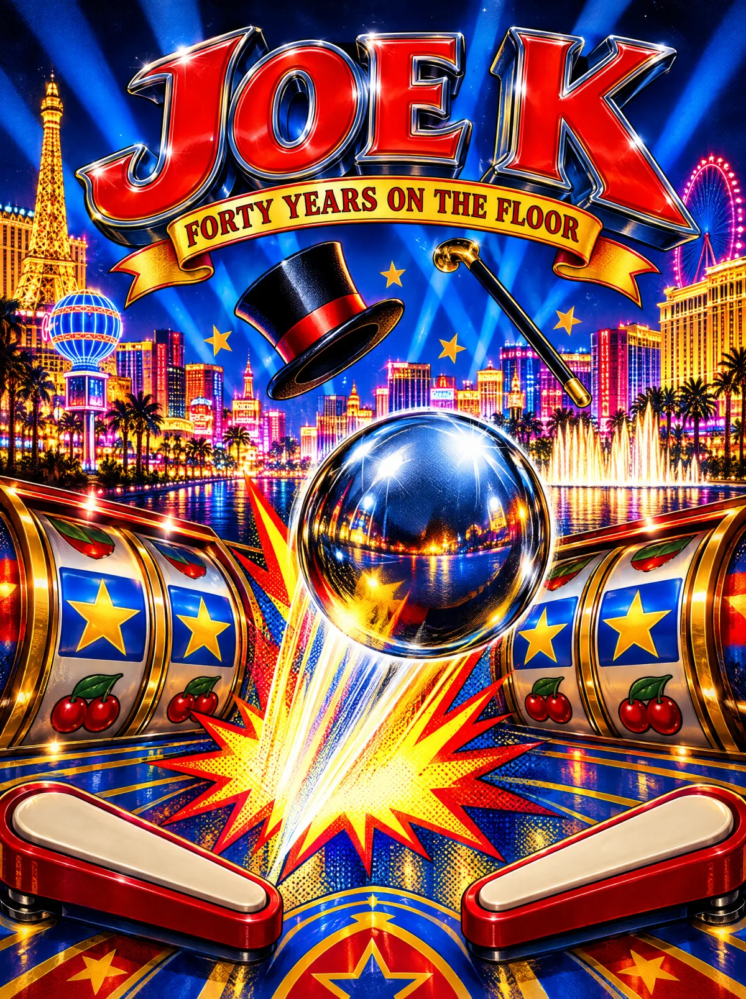

Early career
Logical Highs
He starts a game-development company of his own, Logical Highs.

Insert coin
50¢ per play
3 plays $1.00
Start → Fire → Play. Z / M or the red buttons move the flippers.
Space launches. Arrow keys or tapping either half of the table move the flippers. N nudges; too much tilts. Bumpers, lanes and targets light career moments. Always free, no money or prizes.
The apron cards. Light them on the table above, or just read on.
Early career
He starts a game-development company of his own, Logical Highs.
1984 · Williams
He secures the NASA license for Williams’ Space Shuttle. The machine’s design credit belongs to Barry Oursler; Joe’s licensing contribution helped make this memorable theme possible.
Source: Licensing International, Replay
Thanksgiving 1986
With Gary Stern and Shelley Sax, funded by Data East USA, he starts Data East Pinball as Senior VP of design. By his own account, he and Stern designed the first machine on Thanksgiving Day 1986, out of Road Kings parts.
Source: Sega-16, Licensing International
1987 · Data East
Data East’s debut, built with Gary Stern on Thanksgiving Day 1986 from Road Kings parts. Its scores showed on seven-digit alphanumeric displays, and the Internet Pinball Database lists it as the first pinball from any maker with stereo and 2.1 (subwoofer) sound, music and sound by David Thiel. This table pans its sounds left and right in its honor.
Source: IPDB
1989 to 1999
He brings pop culture onto the playfield: RoboCop, Back to the Future, The Simpsons, Star Trek 25th Anniversary, Teenage Mutant Ninja Turtles, Lethal Weapon 3, then South Park at Sega. He offered Star Wars to designer John Borg, who swapped his planned dinosaur for the Death Star.
Source: Replay, Sega-16, Wikipedia, Star Wars (1992)
February 1991 · Data East
Data East’s Checkpoint is the first pinball with a dot-matrix display, 128 by 16. From Lethal Weapon 3 in 1992 the display grows to 128 by 32, the orange neon plasma screen this machine is built on.
Source: IPDB, Checkpoint, PinWiki, Data East/Sega
1994 · Patent 5,358,244
With Ed Cebula he patents a pinball target that grabs and retrieves the ball. It is the mechanism linked to the T-Rex that snatches the ball in Data East’s Jurassic Park.
Source: Google Patents, Sega-16
1999 · IGT
IGT hires him with that exact title. Five weeks later he runs Engineering and Design. He later described bringing richer video-game technology and presentation to the slot floor.
Source: DICE speaker bio, CDC Gaming, 2023
2000s · IGT
Video Wheel of Fortune leads a run of licensed slots: Sex and the City, Elvis, The Price Is Right, Jurassic Park, Ghostbusters. Replay reports an Inventor of the Year award for the Wheel of Fortune brand.
Source: Replay, Licensing International
2013
His Chicago studio, Spooky Cool Labs, builds an online Wizard of Oz world and is acquired by Zynga in 2013. When he joins Aristocrat that year, six of his top designers come with him.
Source: CDC Gaming, 2017
G2E
He parks his own 1960s Batmobile in the Aristocrat booth at G2E, with Adam West beside it.
Source: CDC Gaming, 2017
Oct 10, 2022 · Aristocrat
Aristocrat names him Chief Innovation Officer across Aristocrat Gaming, Pixel United and Anaxi. The release credits him with game design IP in more than 1,500 games. This describes contribution across teams, not sole authorship of 1,500 games.
Source: Aristocrat release, CDC Gaming, 2023
2020 to 2024
A 1965 Aston Martin becomes a Bond-inspired passion project, realized with Kevin Kay Restorations and a team of craftspeople, engineers and programmers. Read the expanded garage chapter for the story and its published source.
Source: Collectors Car World · Visit the garage
In his words
"I still get a great thrill out of people loving something that I create, and seeing the magic and delight of the players."
Source: CDC Gaming, 2017
An original tribute drawing on period pinball conventions. This version is always free play; the linked manual documents the historical reference:
Sources: Jurassic Park operator manual, Jurassic Park tip sheet, PinWiki, Data East/Sega. High scores on this machine start with JOE, then GB, DBY and AST, the crew that built it.
Thank you for playing, Joe. And thank you for forty years of making the rest of us want one more ball. From Gordon and his team.
Every card above links its source. Facts that could not be verified are left out rather than guessed.